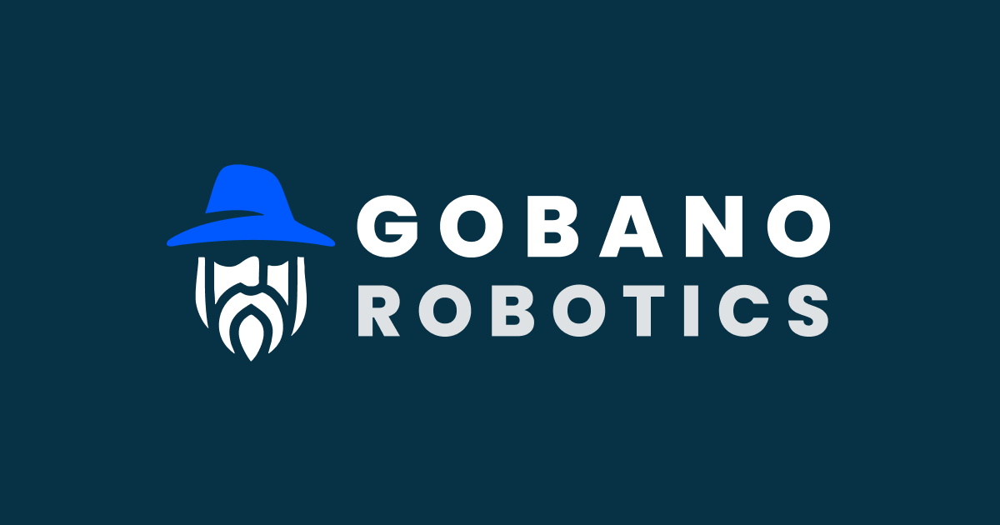

Gobano Robotics lève 3 millions d'euros pour déployer ses robots intelligents dans l'industrie, grâce à son pipeline d'IA robotique
09 septembre 2025

Gobano Robotics, très jeune start up fondée en 2025 . Image : Gobano Robotics
Gobano Robotics, jeune startup deep-tech française spécialisée dans l’intelligence artificielle appliquée à la manipulation robotique, annonce une levée de fonds de 3 millions d’euros. L’opération a été menée par Axeleo Capital, le fonds Digital Venture de Bpifrance et Polytechnique Ventures, avec la participation de Kima Ventures, Motier Ventures, Plug and Play Ventures ainsi que de plusieurs business angels et micro-VC européens stratégiques. Cette injection de capital doit permettre d’accélérer le développement de son pipeline d’IA robotique de nouvelle génération et d’industrialiser le déploiement de robots intelligents capables d’apprendre à réaliser, en toute autonomie, les tâches industrielles les plus fines.
Dans un contexte de réindustrialisation accélérée et de pressions croissantes sur les chaînes de production, les industriels se tournent de plus en plus vers l’automatisation pour améliorer leur efficacité et gagner en compétitivité. C’est précisément sur ce terrain que Gobano entend se démarquer. La jeune pousse développe un pipeline d’IA capable de piloter des bras robotiques en condition réelle de production, dans des procédés nécessitant une grande dextérité et une adaptation constante. L’ambition est de transformer des tâches manuelles complexes, comme le pliage d’objets de forme variable, le tri d’éléments de contours et textures différents, l’assemblage ou encore le vissage, en processus automatisés robustes et performants à grande échelle. La technologie repose sur les récents progrès de l’apprentissage par imitation et vise à offrir aux industriels européens une augmentation de cadence, une réduction des erreurs et, par conséquent, un gain de compétitivité sur un marché mondial particulièrement exigeant.
L’émergence de Gobano s’inscrit dans un mouvement de fond : la convergence d’algorithmes d’IA de nouvelle génération et d’un hardware robotique désormais plus accessible bouleverse l’économie de la robotique de manipulation. Là où la programmation classique atteignait ses limites, il devient enfin économiquement viable de déployer des robots sur des cas d’usage jusqu’ici inaccessibles. Comme l’explique Roch Molléro, CTO et cofondateur de Gobano Robotics, « ce qui nous enthousiasme, c’est la maturité simultanée de plusieurs briques clés : apprentissage par imitation à grande échelle, reinforcement learning en conditions de production, world models et autres modèles fondationnels qui permettent de comprendre et d’anticiper l’environnement, et de générer des trajectoires de manipulation robustes à l’incertitude et aux perturbations. Ensemble, ces approches permettent d’enseigner aux robots des gestes fins, de généraliser aux variations de pièces et de déployer plus vite sur le terrain ».
Grâce à ce financement, Gobano entend accélérer la mise au point de nouveaux modèles intelligents de manipulation robotique et les déployer rapidement sur les lignes de production de ses partenaires industriels. La startup, fondée en juin 2025, compte actuellement sept collaborateurs et prévoit de réaliser ses premières démonstrations concrètes d’ici la fin de l’année. En parallèle, elle prévoit de renforcer son équipe technique pour continuer à repousser les frontières de l’état de l’art. Le modèle économique repose sur une double approche : les industriels pourront acquérir les bras robotiques associés à un abonnement logiciel, ou opter pour une formule intégrée en location.
Pour Ziad Khoury, CEO et cofondateur, « cette levée permettra à Gobano de franchir un nouveau cap : industrialiser rapidement notre technologie pour équiper des lignes de production réelles avec des robots capables d’apprendre et de s’adapter en temps réel ». Cette vision séduit également les investisseurs. Mathieu Viallard, Managing Partner chez Axeleo Capital, souligne que l’approche unique de Gobano, qui combine intelligence artificielle et robotique traditionnelle, répond à un besoin clé du marché et repose sur une équipe de fondateurs expérimentés. Du côté de Bpifrance, Gwenaël Hamon rappelle que la réindustrialisation par l’automatisation représente un enjeu majeur pour les prochaines années, et que l’irruption de l’IA en robotique ouvre de nouveaux cas d’usage qui étaient inimaginables il y a encore peu. Enfin, pour Maxime Cardinal, Partner chez Polytechnique Ventures, l’enjeu est aussi stratégique : « la transformation par l’IA et les enjeux de souveraineté de l’industrie française et européenne sont au cœur de nos priorités. Les expériences combinées de Ziad, serial entrepreneur aguerri dans le logiciel industriel, et de Roch, expert en machine learning, intelligence artificielle et robotique depuis plus de dix ans, sont très prometteuses ».
Gobano Robotics, ambitionne de devenir un acteur clé de la robotique de manipulation intelligente en Europe. Cette levée de fonds marque une étape décisive pour cette jeune pousse, qui projette de réaliser des démonstrations concrètes d’ici fin 2025.